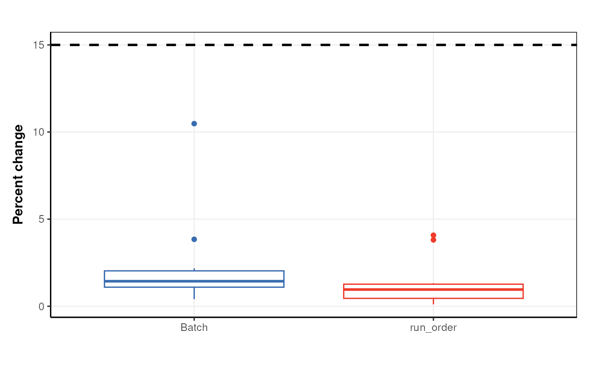

Confounding factor relative change boxplot
Source:R/confounders_clsq_class.R
confounders_lsq_boxplot.RdA boxplot of the relative change (delta) in regression coefficient when potential confounding factors are included, and excluded, from the model. Factors with a large delta are considered to be confounding factors.
Value
A
confounders_lsq_boxplot
object. This object has no output slots.
See chart_plot in the struct package to plot this chart object.
Inheritance
A confounders_lsq_boxplot object inherits the following struct classes: [confounders_lsq_boxplot] >> [chart] >> [struct_class]
Examples
M = confounders_lsq_boxplot(
threshold = 10)
D = MTBLS79_DatasetExperiment()
M = filter_by_name(mode='include',dimension='variable',
names=colnames(D$data)[1:10]) + # first 10 features
filter_smeta(mode='exclude',levels='QC',
factor_name='Class') + # reduce to two group comparison
confounders_clsq(factor_name = 'Class',
confounding_factors=c('run_order','Batch'))
M = model_apply(M,D)
C = C=confounders_lsq_boxplot(threshold=15)
chart_plot(C,M[3])
